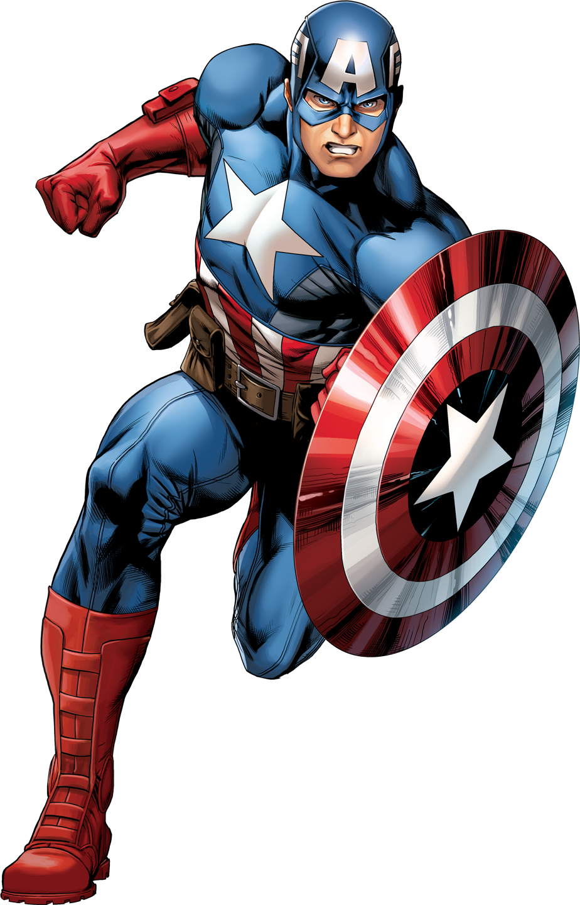

Steve Rogers
Origem dos poderes: Recebeu o Soro do Super Soldado, que aumentou sua força,
velocidade, resistência e reflexos ao máximo do potencial humano.
Arma principal: Um escudo quase indestrutível feito de vibranium,
capaz de absorver impactos e ricochetear com precisão.

Conflitos emocionais: Em várias histórias, suas amizades, seus valores e
o peso de ser um símbolo podem influenciar suas decisões, levando-o a hesitar em situações difíceis.
Excesso de senso de dever: Steve Rogers costuma colocar a segurança dos outros acima da própria.
Esse comportamento pode ser explorado por inimigos que façam reféns ou usem pessoas inocentes como isca.